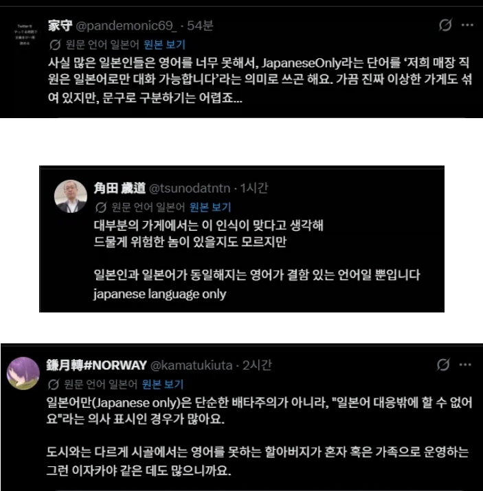

https://bbs.ruliweb.com/best/board/300143/read/77420055

https://bbs.ruliweb.com/best/board/300143/read/77420055

근데 음식점에서 의사소통이 중요한거야?
여행객이 메뉴판 보고 번역기 돌려서 손으로 가리키면서 이찌 만 해도 되는거잖아
물 달라는 말도 어버버 하게되니 그렇지
넌 중국인에 대해 좀 더 알아야 해
그리고 분홍색 형광연두색 잠바를 입은 한국인에 대해서도 ㅋㅋㅋ
어르신들은 간단한 영어표현조차 당황 하는일이 많아서 글치
노인점주들은 손님에 크게 연연하지 않는 경우도 많고
그러다 알러지 있는 놈이 잘못 먹고 쓰러지면?
외국에서 그러는 건 본인 탓.
소통가능 불가능보다는 자신들이 일본어외에는 대응하기 어렵다는 접근이지 않을까 싶네
업종따라 다르긴 함
알러지 확인해야 되는 매장이 있을수도 있는거고
클레임 대응여부라던가 세부주문이 가능한데 일본어를 몰라서 못하는 경우도 많지
거기에 이자카야 문화 자체가 테이블에 얼굴쳐박고 휴대폰보면서 혼술 혼밥하는곳이 아니라 주변테이블손님들과 가게 주인장이랑 스몰토크 하면서 안주에 술을 즐기는 곳인데
대화도 안통하는 외국인이 자리 차지하고 있으면 신경쓰이지
메뉴판도 손으로 써놔서 번역기가 '이게 뭔냐 인간놈아?' 하는 경우도 있음
그 나라 가면 그 나라 언어를 쓸려고 노력해야지. 한국에서 외국인이 당연하다는 듯이 영어로 물어보는거 보면 존나 짜증남
말안통하면 지가 더짜증내는데 그게 존나 열받음
난 한국에 알리페이 잘 안들어왔을떄 짱들 와서 허구언날 알리페이 들이밀면서 짜증내는게 그렇게 싫었음 ㅋㅋㅋㅋ
그건 짐승들이고
해외 여행에 있어 언어는 그 나라와 문화에 대한 존중이라는 말이 있음
해당국가에 갔으면 적어도 상용구 수준의 현지언어와 번역기 사용은 최소한의 메너라 생각함
왜 저스트 잽스도 아니고 잽스 온리지
저런데 보통 사진 메뉴판도 없음
그럼 한국엔 왜 Korean only라고 써진 가게가 없냐?
그런가게는 벌써 망했거든
가끔 있음
어지간히 빡대가리들만 모인거 아닌이상 가게직원중 최소한 한명은 영어가 가능함
한국인의 오지랖이면 외국인 어버버 대고 있으면 서로 나서서 도와줌
있는데?
일본만큼 관광객이 안 오니까
하하하하 개소리 ㄴ
영어못해요를 추가로 적어둔데 아니면 다 지랄맞은 년놈들임
입구에 Japanese only 만 써져있으면 이새끼들 이거?
하는 가게가맞음
당사자가 '일본인'인 시점에서 신뢰도 -50%
세계화 속에서의 갈라파고스
그 밑에 일본어로 “이걸 읽을 수 있으면 입장하셔도 됩니다” 따위가 적혀있는 경우가 많음
일본어를 할 수 있으면 영어 못하는 직원들도 대응이 가능하단 소리니까 당연하지
-어와 -인을 구분하지 못하는 언어는 미개한게 맞지 ㅋㅋ
개와 중국인 출입금지 (공원관리인이 영어밖에 못합니다)
대마도 혐한 최고치였을때 제패니즈 온리 : 외국인 출입금지였음 ㅋㅋㅋ
방송인들이나 유튜버들이 가서 가게직원들 인터뷰한것에도 일본어를 할 줄 안다고 한들 한국인은 받지 않는다 라는 입장이었고
nihongo only 라고 쓰면 되지않니
외국인들이 알아봐야 의미가있지 일본인들만 알아보면 무슨의미가있음?
니혼 얘내들이 미는 국호 아니엇음?
찾아서 여행을 올정도인데 이거 모르나..ㅠ
퇴근이나하쇼
"Only japanese speaking"으로 쓰면 되는건가
음습한 새끼들 조까고 있네
중의적인 문장을 적어 놓고 누가 지적하면 '아닌데 그뜻아닌데??' 이지랄 하는게 ㅋㅋ
음습하고 저열한 습성이지
알러지 있으면 스스로 알아서 조심해야지. 언어가 안 통하면 더 조심해야 하는 거고.
영포티들 존나 많네 에휴
일본"인"이 아니고 "일본어"구만